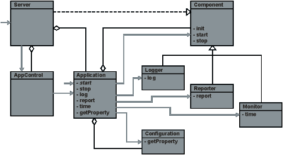
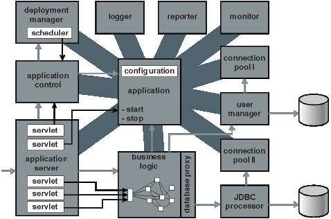

|
 |
|
|
| |

|
| |
Sinds het ontstaan van gedistribueerde systemen, zo'n 30 jaar geleden, heeft men
getracht de ontwikkeltrajecten voor dit soort systemen te versnellen en de kwaliteit te
verbeteren. Daarnaast heeft men de enorm toegenomen mogelijkheden van user interfaces
moeten bijbenen. Van veel verbetering in het ontwikkelproces lijkt nog geen sprake te
zijn. Dit komt waarschijnlijk door de enorme haast die men in ons vakgebied aan de dag
legt; door de gretigheid waarmee een nieuwe ontwikkeling wordt omarmd en opgedane kennis
afgedankt.
Met de regelmaat van de klok worden er met veel tamtam nieuwe methodologiën en
gereedschappen geïntroduceerd. Object oriëntatie (OO) is, als één
van de meer succesvolle benaderingen, gebleven in de vorm van C++, Java en C#. Het
zuiver OO-modelleren lijkt nu echter wat weg te zakken onder het geweld van patterns en
frameworks.
OO is vooral geschikt gebleken om moeilijke business cases te modelleren en om te zetten
in succesvolle applicaties. Van flexibiliteit, beheersbaarheid en hergebruik van code is
echter niet veel terecht gekomen. Zo rond 2000 was component based development (CBD)
nogal in zwang. OO gecombineerd met CBD zou de resterende belofte van OO waarmaken. Om
onduidelijke redenen heeft niemand een succesvolle en tevens werkbare implementatie
kunnen maken. (J2EE, COM, .NET, San Francisco, The Select Perspective, Catalysis). Het
lijkt erop dat men bij veel van dit soort projecten net niet de juiste benadering heeft
kunnen vinden (afgezien van COM). Ondanks dat zijn de frameworks enorm uitgebouwd en met
het gebruikelijke rumoer in de markt gezet. De frameworks lijken te lijden aan het
Second-System Effect (zie: The Mythical Man-Month - ISBN: 0201835959). Ze zijn log en
zwaar, gebruik ervan is vermoeiend en frustrerend voor een ontwikkelteam.
IJsberg heeft enige tijd onderzoek gedaan naar CBD. Na een paar mislukte pogingen is het
gelukt om een CBD-framework op te zetten. De sleutel tot de oplossing bleek het weglaten
van features te zijn. Één van de karakteristieken van het framework is dat
de structuur van elke deeloplossing in 3 tot 5 elementen overzien kan worden. Met dit
inzicht bleek het verassend weinig moeite te kosten om onze bestaande Java
codebibliotheek om te zetten naar het nieuwe framework. Integratie van allerlei 3rd
party code bleek vervolgens ook geen probleem. Ook bleek het framework uitermate
geschikt als basis voor de webapplicatie van Albert.
Het framework is inmiddels uitgebreid met een aantal componenten waardoor het als een
applicatie server kan draaien. Wij vinden dat het tijd wordt om ons product te delen met
de rest van de wereld.
Wij streven ernaar om Cornerstone simpel, compleet en open te maken en te
houden.
Simpel
- Cornerstone moet gelijk en altijd kunnen starten, ook zonder configuratie
- Cornerstone moet de ontwikkelaar wijzen op eventuele fouten en oplossingen
i.p.v. te crashen
- Cornerstone moet doelgericht zijn en bestaat alleen uit elementaire
functionaliteit
Compleet
- Cornerstone bevat een volledige technische applicatie-infrastructuur
- Cornerstone bevat alle noodzakelijke basisfunctionaliteit voor het bouwen van
middleware applicaties
- Cornerstone bevat een management console voor beheer
- Cornerstone is (voorzien van) een applicatie-server
Open
- De source code van Cornerstone en standaardcomponenten wordt vrijgegeven
- Implementatie van basis functionaliteit kan te allen tijde worden vervangen
- Cornerstone hoeft niet centraal te staan, het kan ook als klein onderdeel van
een andere applicatie worden gebruikt
Wij streven daarmee de volgende doelstellingen na:
- Snel en efficiënt ontwikkelen (alles moet snel)
- Mogelijkheid om met elk ander systeem te kunnen integreren
- Eenvoudiger en krachtiger onderhoud en beheer van de applicatie
Snel en efficiënt ontwikkelen
Cornerstone voorziet in een technische applicatie-infrastructuur met componenten voor
o.a. configuratie en logging. De applicatie(server) kan na het uitpakken gelijk
command-line gestart worden, eventueel vanuit een ontwikkelomgeving. Eigen componenten
kunnen d.m.v. configuratie worden toegevoegd. M.a.w. de installatie van Cornerstone kost
geen tijd; men kan direct beginnen met het ontwikkelen van klantspecifieke
functionaliteit. Door de eenvoudige componentstructuur wordt bovendien hergebruik van
code gestimuleerd.
Mogelijkheid om met elk ander systeem te kunnen integreren
De kern van Cornerstone bevat enkele minimale, maar noodzakelijke mechanismes voor
sessiemanagement, authenticatie, autorisatie, configuratie, logging en reporting. De
afhandeling van al deze mechanismes wordt overgelaten aan componenten, waarvan standaard
een simpele implementatie wordt meegeleverd. Enerzijds is hiermee de voor
gedistribueerde systemen noodzakelijke infrastructuur gegarandeerd. Anderzijds is het
mogelijk gewenste klantfunctionaliteit en technische afhandeling aan welke oplossing,
systeem of pakket dan ook uit te besteden. (Compleet/Open concept)
Eenvoudiger en krachtiger onderhoud en beheer van de applicatie
De bouwstenen van de applicatie, de componenten, hebben allen enkele gemeenschappelijke
eigenschappen en zijn aangesloten op een gedeelde infrastructuur. Daardoor zijn ze via
een management tool te monitoren en aan te sturen. Het is mogelijk om, zelfs runtime
(maar daar moet mee oppassen), componenten te vervangen door een ander. Het gemak van de
management console en de structuur van het framework leiden een applicatieontwikkelaar
vanzelf in de richting van een degelijke component-architectuur.
Cornerstone is volledig in Java gemaakt. Java is bij uitstek geschikt voor een
CBD-implementatie omdat het aan runtime classloading doet. Daarnaast is het een rijke en
populaire taal. Met java wordt rekening gehouden, hetgeen integratie-inspanningen
vergemakkelijkt.

Een applicatie bezit een configuratie en bevat een aantal componenten. Elementaire
toegang tot de componenten wordt door een applicatie(-controle)-object verschaft.
Toegang voor gebruikers vindt plaats via een server. Een server kan zelf ook een
component zijn en worden opgestart door de applicatie.
De wereld volgens Cornerstone is nogal simpel. Dat moet ook wel, want Cornerstone kan
zich alleen aan een veelheid van andere systemen aanpassen als het slechts fundamentele
eigenschappen van gedistribueerde applicaties ondersteunt.
De hoofddraagstructuur wordt gevormd door de Application class, naar analogie van de
Java System class. Door een Application te instantiëren (via de command-line of op
een andere manier) komt Cornerstone tot leven. De Application leest de configuratie uit
en start gespecificeerde componenten op.
Cornerstone kent in het dagelijks leven 1 type mens, de user. De user heeft eventueel
een sessie, een aktentas waarin de user specifieke zaken m.b.t. zijn bezoek bewaart. De
user mag in sommige gevallen wel of niet bij sommige objecten. dit wordt bepaald
a.d.h.v. de groep waar de user toe behoort.
Cornerstone kent drie instanties die iets van de applicatie willen weten. Ontwikkelaars,
beheerders en managers. Ontwikkelaars willen weten of ze geen fouten hebben gemaakt.
Beheerders willen weten of alles lekker loopt. Managers willen op de hoogte zijn van
calamiteiten en resultaten.
Cornerstone brengt meldingen op drie niveaus: debug, verbose en critical.
Cornerstone kent drie types meldingen: information, warning en error.
Een Cornerstone component moet drie dingen kunnen: initialiseren, starten en stoppen.
Indien de applicatie een component beveelt te resetten, wordt een stop-init-start
uitgevoerd indien het al gestart was, of anders alleen een init.

Voorbeeld van een Cornerstone-architectuur. Een applicatie-object controleert een
aantal faciliterende componenten. De stervorm is karakteristiek voor een
CBD-architectuur. Via een applicatieserver kan de applicatie worden gecontroleerd en
kan business logic worden benaderd. De business logic, object georiënteerd
uiteraard, hoeft niet per se zelf een component te zijn.
Basic
- Simpel configuratie- en initialisatiemechanisme
- Uitgebreide logging en rapportage
- Performance monitor
- Eenduidige database ontsluiting
- User Management
- Connectiepooling
- Flow mechanisme (simpele rule engine voor o.a. websites)
- (Web)formulier afhandeling
- Component monitoring
- Component aansturing
- (Runtime) component upgrade
Advanced
- Ge�ntegreerde webserver en servletrunner (Jetty)
- Ge�ntegreerde JSP-compiler (Jasper)
- Ge�ntegreerde connectiepool (Proxool)
- Deployment manager (upload en deployment van resources)
- Caching
Enterprise
- Uitgebreide performance analyzer
- Distributed components
- Diverse adapters:
Het is de bedoeling om het basic framework van Cornerstone als open source vrij te
geven. Eind november, begin december 2003 zal er een beta release plaatsvinden.
|
|
- copyright � 2003 ijsberg automatisering -
website by addink.net
|